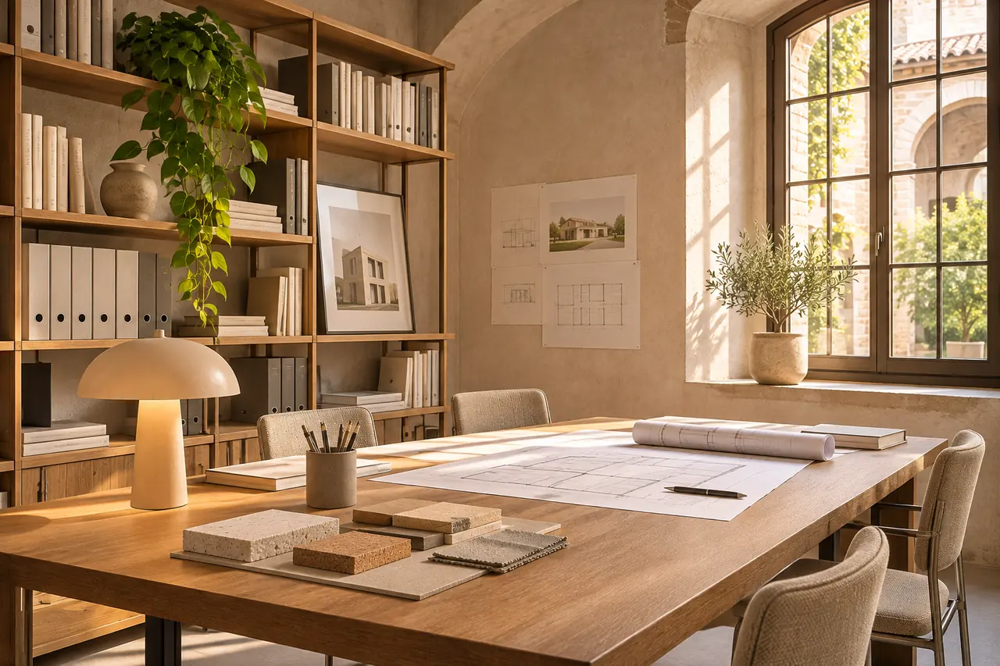

Sono Cristina Restani
Architetto residenziale a Mantova. Progetto case pensate per le persone che le abitano.
Il mio lavoro
Da oltre vent’anni progetto abitazioni private a Mantova e in provincia: nuove costruzioni, ristrutturazioni e interni per famiglie e privati.
Tutto parte dall’ascolto. Prima di disegnare voglio capire come vivi, cosa ti serve oggi e cosa ti servirà tra qualche anno. Poi cerco l’equilibrio tra design contemporaneo, soluzioni sostenibili e funzionalità.
Mi sono specializzata in bioedilizia, efficienza energetica e recupero di edifici storici: temi che a Mantova, tra case di corte, palazzi del centro e campagna, si incontrano spesso.
Seguo ogni progetto personalmente, dalla prima consulenza alla direzione lavori. Lo studio è a Borgo Virgilio, a pochi minuti da Mantova, e ricevo su appuntamento.
Iscritta all’Ordine degli Architetti P.P.C. della Provincia di Mantova, n. [N. ISCRIZIONE ALBO]. Profilo LinkedIn

Cosa puoi aspettarti da me
Ascolto prima di disegnare
Il progetto nasce dalle tue abitudini e dai tuoi desideri, non da uno stile preso in prestito.
Costi chiari fin dall’inizio
Preventivo scritto, stime dei lavori realistiche e nessuna sorpresa sull’onorario.
Un progetto che dura
Materiali sani, consumi bassi e spazi che si adattano a come cambia la tua vita.
Raccontami il tuo progetto
Una telefonata, un messaggio o due righe nel modulo: il primo incontro conoscitivo è gratuito e senza impegno.
Oppure chiamami al 340 409 2130, lunedì–sabato, 8:30–18:30.